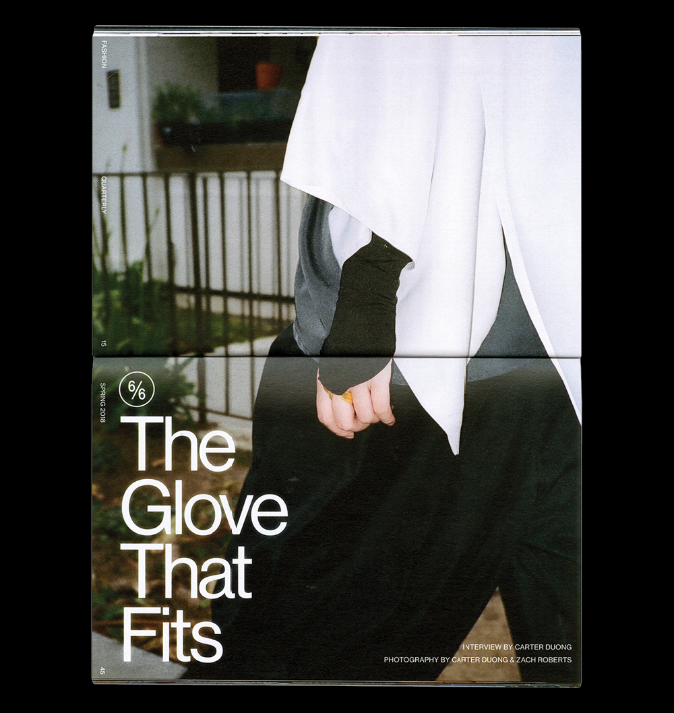
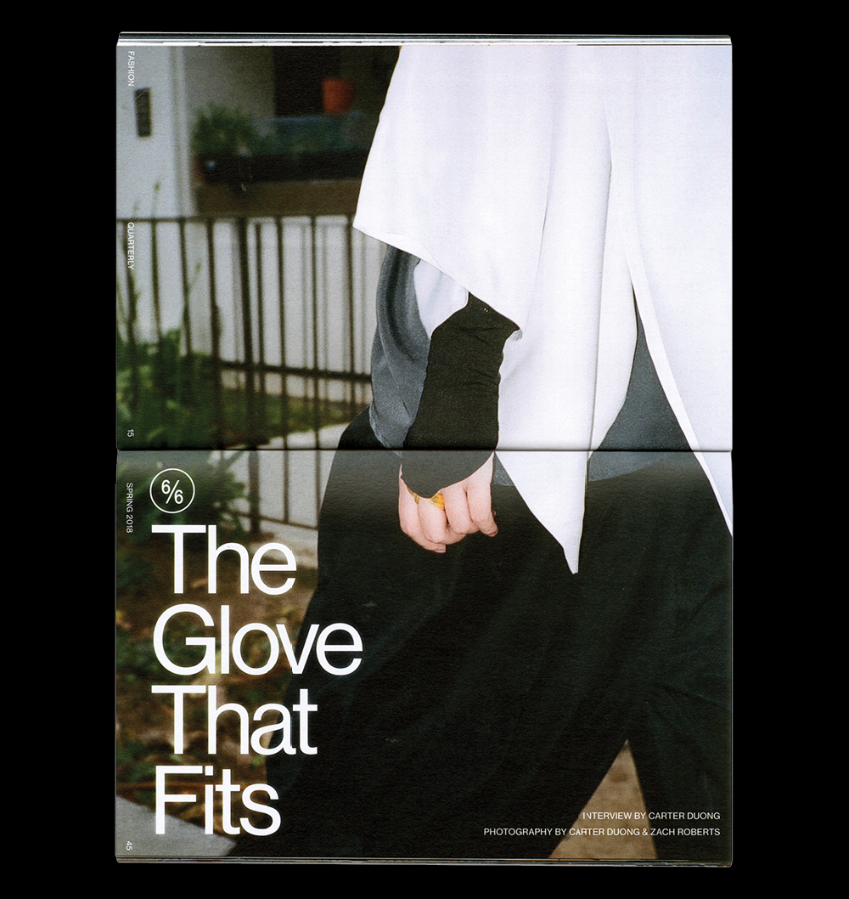
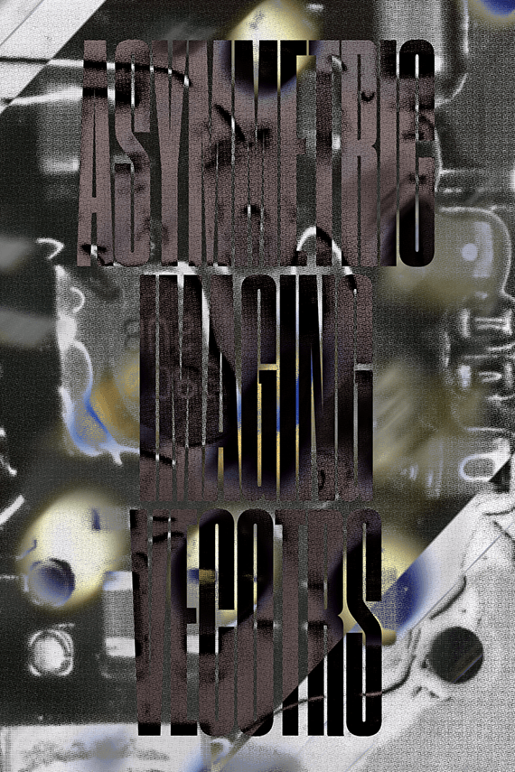

Carter Duong is a designer and developer from
the Bay Area1+2
and based near Los Angeles3. He recently graduated from UC San Diego4
with a B.A. in Interdisciplinary Computing and the Arts.

 


Fashion Quarterly
A student-run publication that explores the culture of style, art, and design at UC San Diego.
Writing by Leanza Ellacer and Zach Roberts. Photograhy by Carter Duong, Lily Tang, and Dora Wang.
Bitter Melon
A lightweight photoblog developed with choo.
Photography by Carter Duong.

Heavy Friends
A microsite for a weekly radio show based out of KSDT at UC San Diego.
Form
A series of sketches inspired by Jodi.
Résumé
A short game about being true to yourself.


Posters
Miscellaneous sketches in 3D and 2D.

Extras